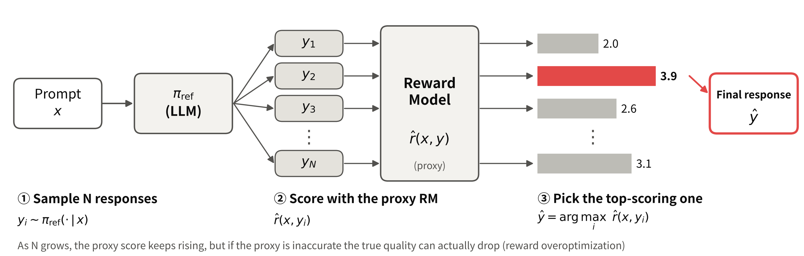
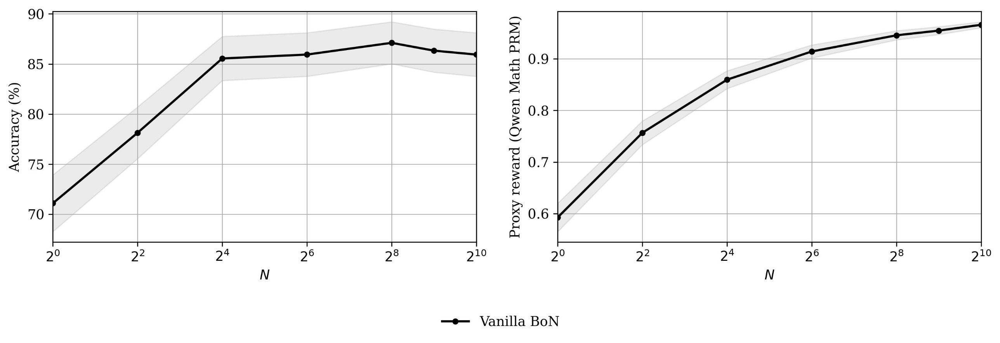
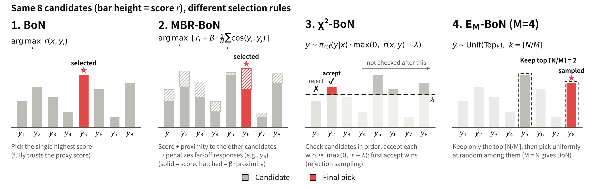
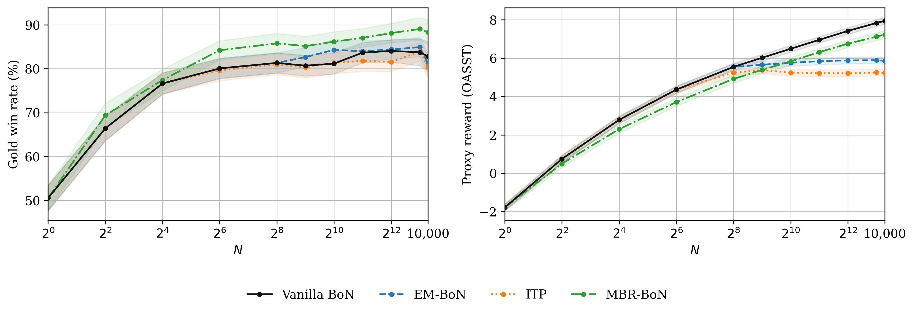

Vanilla BoN
점수가 가장 높은 1개
보상 모델을 그대로 믿습니다. N을 잘 맞추면 최적이지만, N이 너무 크면 과최적화가 생길 수 있습니다.
2026 졸업작품 · 서경대학교 전자컴퓨터공학과
Best-of-N 추론 정렬에서 발생하는 보상 과최적화(Reward Overoptimization)와, 이를 막기 위해 제안된 방법들을 같은 조건에서 비교한 실험입니다.
LLM에게 답을 N개 받아 두고, 채점 모델이 가장 높게 평가한 하나를 고르는 방법입니다.
모델을 다시 학습시키지 않고도 추론 시점에 계산을 더 써서 답의 품질을 올릴 수 있어, 가장 간단하면서도 널리 쓰이는 정렬 방법입니다. 채점은 사람 대신 사람의 선호를 학습한 보상 모델(Reward Model)이 합니다.

보상 모델은 사람의 판단을 흉내 낸 대리 지표(proxy)일 뿐이라서, 틀리는 지점이 있습니다.
N을 키울수록 선택은 점점 보상 모델이 과대평가한 답을 골라내게 됩니다. 그래서 보상 모델의 점수는 계속 오르는데, 실제 품질은 멈추거나 오히려 떨어질 수 있습니다.
오른쪽 실험에서도 보상 점수는 N = 1,024까지 꾸준히 오르지만, 실제 정답률은 N = 16 무렵부터 거의 늘지 않습니다.

최근 논문들은 학습 없이 "고르는 규칙"만 바꿔서 과최적화를 막는 방법을 제안했습니다. 하지만 서로 비교된 적은 없었습니다.

보상 모델을 그대로 믿습니다. N을 잘 맞추면 최적이지만, N이 너무 크면 과최적화가 생길 수 있습니다.
다른 답들과 동떨어진 "튀는 답"에 벌점을 줍니다. 보상 모델은 흔한 답 근처에서 더 믿을 만하다는 생각입니다.
지나치게 높은 점수를 의심합니다. N을 늘려도 성능이 떨어지지 않는다는 것이 이론적으로 증명되었습니다.
점수 분포의 극단적인 꼬리를 피합니다. N에 대해 성능이 줄지 않는다는 것이 증명되었고, N ≤ M이면 Vanilla BoN과 같습니다.
모든 방법이 같은 후보 응답 풀에서 고르도록 해서, 차이가 오직 "고르는 규칙"에서만 나오게 했습니다.
vLLM으로 프롬프트마다 응답을 대량 생성해 저장. GPU 2장 병렬, 중단되면 이어서 생성
보상 모델(proxy)로 모든 응답에 점수를 한 번만 매기고 캐싱
같은 후보 묶음에 4가지 규칙을 적용. N = 1부터 10,000까지, 5개 seed 반복
고른 응답을 GPT-4o-mini 심판으로 평가하고 그래프로 정리
| 데이터셋 | AlpacaEval 128문제(일반 지시 수행), MATH 256문제(수학) |
|---|---|
| 응답 생성 모델 | Qwen2.5-1.5B-Instruct, Qwen2.5-Math-1.5B-Instruct |
| 보상 모델 (proxy) | OASST RM (Pythia-1.4B, 약한 보상 모델), Qwen2.5-Math-PRM-7B (강한 수학 전용 보상 모델) |
| 실제 품질 (gold) | AlpacaEval: GPT-4o-mini가 판정한 승률 · MATH: Math-Verify로 확인한 정답률 |
| 실행 환경 | Ubuntu 22.04, NVIDIA Quadro RTX 8000 (48GB) × 2 |
N이 커질수록 보상 점수는 계속 오르지만, 실제 승률은 일찍 멈춥니다. 방법마다 그 모양이 다릅니다.

보상 점수는 −1.8에서 8.0까지 계속 오르지만, 승률은 약 50%에서 시작해 N = 26 무렵 80%에 이른 뒤 84% 근처에서 거의 멈춥니다.
N ≥ 26부터 Vanilla BoN보다 승률이 약 3~6%p 높습니다. 보상 점수가 더 낮은데도 그렇다는 것은, 상위권에서 보상 모델과 심판의 판단이 갈린다는 뜻입니다.
N = 28 이후 보상 점수가 각각 약 5.9, 5.3에서 평평해져, 설계대로 극단적인 답을 피합니다. 승률은 Vanilla BoN과 비슷한 수준입니다.
음영은 반복 실험의 불확실성 범위입니다. 방법 간 차이가 통계적으로 유의한지는 추가 검정으로 확인하고 있습니다.
무엇을 알게 되었고, 다음에 무엇을 확인할 것인가.
보상 점수가 오르는 것만으로는 좋아졌다고 말할 수 없습니다. 두 실험 모두 보상 점수는 끝까지 오르지만 실제 품질은 일찍 멈췄습니다. 항상 별도의 실제 품질 지표로 확인해야 합니다.
약한 보상 모델에서는 고르는 규칙이 결과를 바꿉니다. 같은 후보 풀에서도 MBR-BoN이 가장 높은 승률을 냈고, EM-BoN과 χ²-BoN은 보상 점수의 폭주를 막았습니다.
다음 단계는 MATH에서 정규화 방법들과 약한·강한 보상 모델을 함께 비교해, "보상 모델이 좋을수록 정규화의 필요가 줄어드는가"를 확인하는 것입니다.